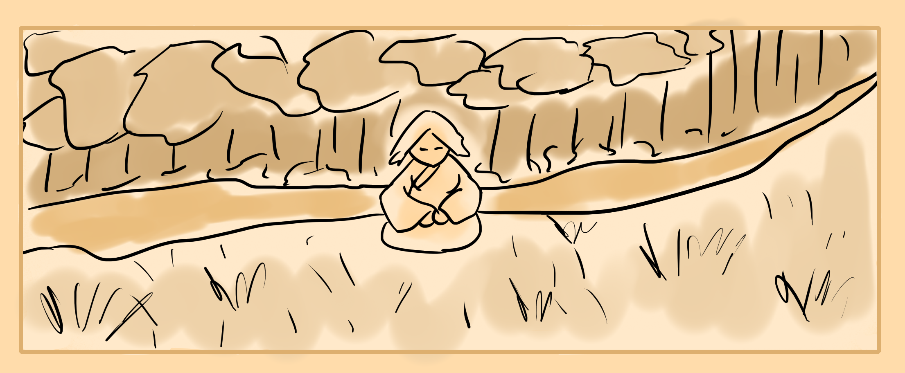
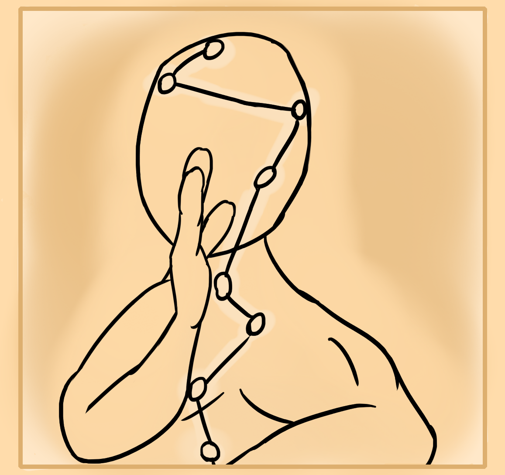
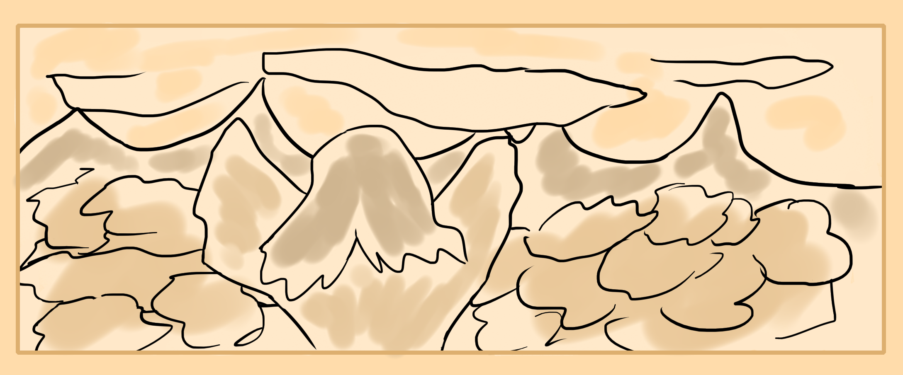

Energy cultivation is an ancient art practiced by martial artists, healers, magicians, shamans, priests, kings, witches and other great people throughout history.
In the past, people were very in touch with their internal bodies and the flow of nature. Hence this lead to the creation of special arts which became some form of energy cultivation.
I believe that it is universal natural energy which we are learning to control within our bodies and the world around us. This can then manifest into a form of electricity, magnetism or even further down into temperatures, moisture and even physical matter.
All life forms on this planet take in this energy to nourish themselves, heal themselves and strengthen themselves.
In the wild where your senses are sharper you may start to notice that trees and animals glow. There exists an aura field of energy around every living thing. Animals can sense this and know when to and when not to approach others. You can learn this through hunting, how to hide your aura or how to express it. Ancient man was very in touch with this.
Similarly certain geographical locations have their own special sensation. Dark caves are very negative as they're dark and surrounded by stone and dirt. Out in the desert it is positive as its hot and drying. Tribal folk understood this and knew that the kind of animals, minerals and herbs found in certain areas correspond to the energy of that area. Being moisture, temperature, sound, light, land, feeling, water and land.
Eventually they found out that if they lived in these areas, or ate the animals, minerals and herbs that they took on special qualities like temperature resistance, thicker skin or a clearer mind.
After great amounts of meditation, people start to feel the world within themselves. They felt centers of hot and cold, electricity, calmness, solidness. There became channels that connected these centers and along with the practice of butchering animals or even investigating of dead bodies came the understanding of anatomy and basic medicine. They were able to relate the inner world of feeling to the outer world seen from animal bodies.
When certain hand gestures, postures, sounds voiced, times of day, geographical locations, foods eaten and meditations done, then the internal world would give a corresponding feeling or stimulation. The weird squishy center of organs that were found would react internally in ways to these stimuli. The spiritual centers that overlayed these organs also reacted.
Wise men then knew that the world within him and without is related.
Then these wise shamans figured out how to manipulate the internal centers and the flow of power within their own body. They learned healing arts to aid their tribe by leading the force and flow of power that had blocked up, or malfunctioned, relieving people of illness.
Some figured out the way to use this magic force for evil and were able to cause illness and decay within people. Others used it to amplify their martial arts, strengthen their wills to fight, bodies to defend and fists to strike. Each person who found out about this ability used it in their own special way.
Eventually some figured out that this same flow within themselves exists in all of nature. The sky and clouds formed through the same force, lightning striked through a condensation of it. And then the tribal shaman start to apply his internal power, to the external world.
The manipulation of weather is the simplest and first art learned. Eventually the other elements like fire and water were conquered. Even other animal bodies or humans could be puppeteered through this force.
Many different sects and groups were born out of different cultivation methods. Some followed a more yang and external body cultivation while others lived in caves or on top of mountains and practiced more internal meditative arts.
These cultivators became highly valued and feared by the ruling elite which either waged war upon them or recruited them as court magicians and teachers. Some cultivators managed to integrate into society or become hermits living in secrecy though.